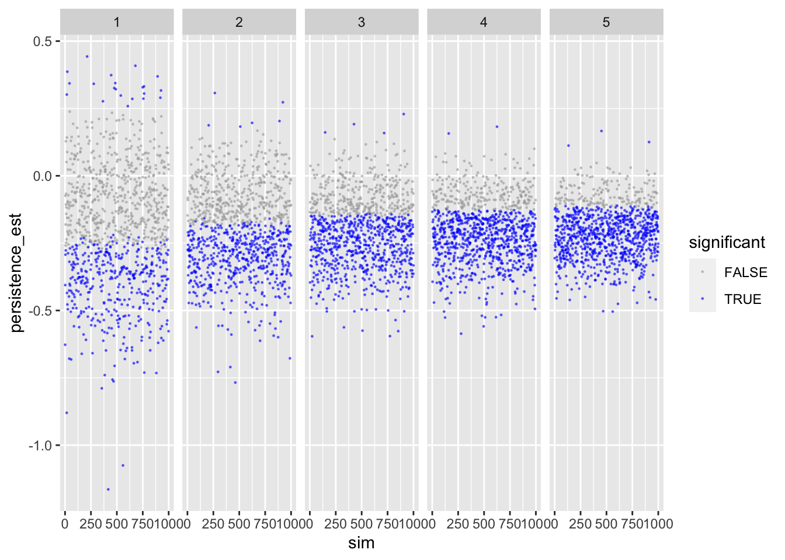
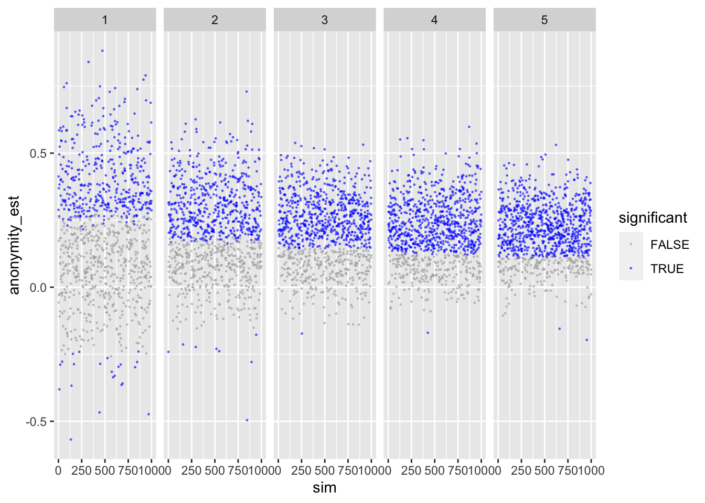
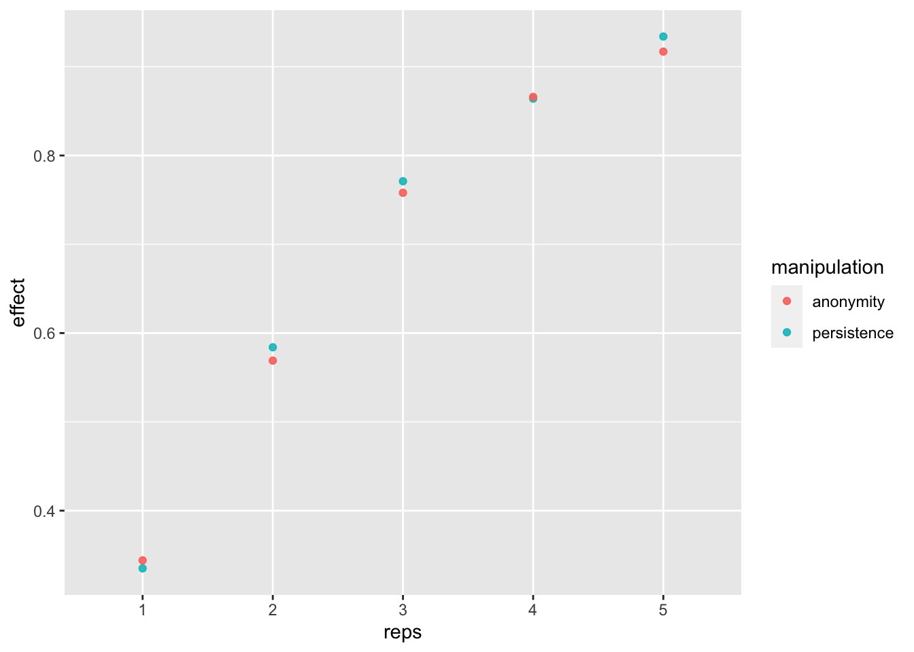
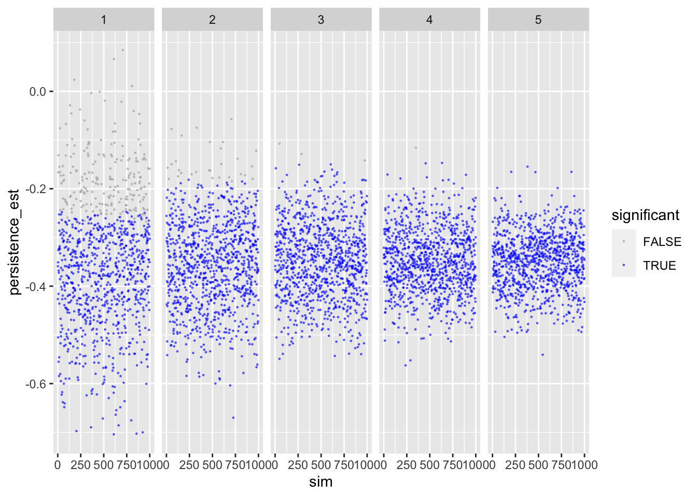
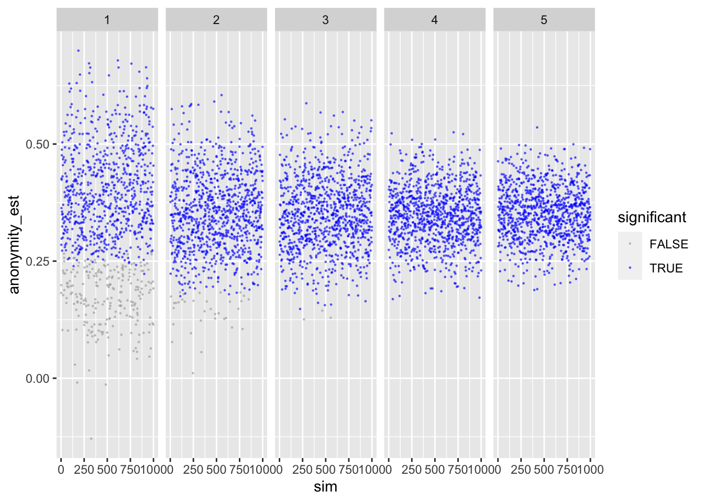
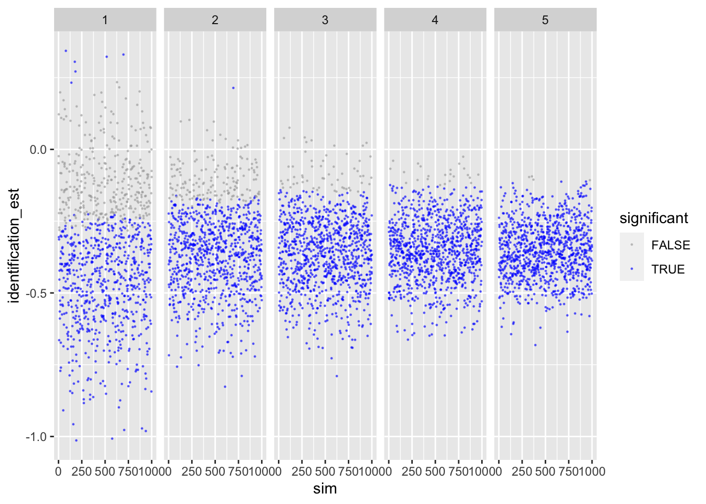
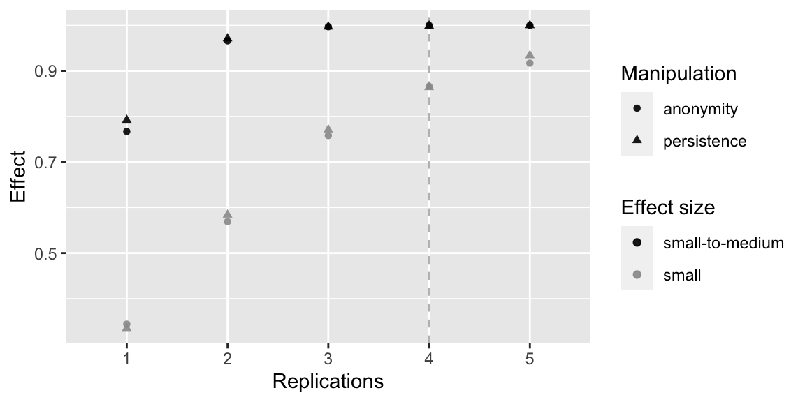

library(BayesFactor)
library(brms)
library(broom)
library(ggplot2)
library(knitr)
library(magrittr)
library(tidyverse)Using data simulation, we run a power analysis for a study on how design characteristics of online platforms affect online political participation. In the study, people use a social networking site (discord) on which they discuss political matters. Participants will communicate in groups of 20 people each. This number is fixed for theory-related reasons, as we are interested in medium scale group communication. The dependent variable is how much people discuss (measured via number of opinion expressions). We’re interested how different SNS designs affect communication.
The study design is as follows:
So these are 2 (anonymity) x 2 (persistence) experimental factors and a 3-way generalization factor (topic), resulting in a minimum of 12 groups. Hence, the minimum sample size 12 x 20 = 240 participants.
To calculate power, the question now is how often do we need to repeat this design to achieve sufficient power? Once, twice, thrice, etc? Hence, the factor to change/affect power is repetition, ranging from 1 to 5. Note that financing would only allow 4 repetitions, so the fifth is out of curiosity.
We are simulating data which we then analyze. The data simulation is somewhat rudimentary.
In conclusion, in our paper we will analyze the data using (Bayesian) mixed effects modeling using lme4 and/or brms.
generate_design <- function(groupsize,
persis,
anon,
topics,
repetition,
...){
# function generates underlying (empty) datastructure
# count number of groups
groups <- persis * anon * topics * repetition
# make datastructure
expand.grid(
participant = 1:groupsize,
persistence = 1:persis - 1, # -1 to make binary
anonymity = 1:anon - 1,
topic = 1:topics,
repetition = 1:repetition) %>%
as.data.frame() %>%
rownames_to_column("id") %>%
mutate(
group = rep(c(1:groups), each = groupsize))
}sim_d <- function(d_frame,
seed, # make results reproducible
effects, # vector of effects we anticipate
sd,
groupsize,
...){
# function to simulate data
# set.seed(seed) # uncomment to make results reproducible
# compute how many participants per cell (exp. condition)
n_cell <- groupsize_n * topics_n * repetition_n
# create the DV.
# For now, this will be standardized, bc. of lack of concrete data
d_frame$expressions <- NA # create variable that'll be filled next
# run loop creating DVs
for(i in 1 : repetition_n){
for(j in 1 : topics_n){
d_frame[d_frame$persistence == 0 &
d_frame$anonymity == 0 &
d_frame$repetition == i &
d_frame$topic == j, ]$expressions <-
rnorm(groupsize_n, effects["pers0_anon_0_m"], sd)
d_frame[d_frame$persistence == 1 &
d_frame$anonymity == 0 &
d_frame$repetition == i &
d_frame$topic == j, ]$expressions <-
rnorm(groupsize_n, effects["pers1_anon_0_m"], sd)
d_frame[d_frame$persistence == 0 &
d_frame$anonymity == 1 &
d_frame$repetition == i &
d_frame$topic == j, ]$expressions <-
rnorm(groupsize_n, effects["pers0_anon_1_m"], sd)
d_frame[d_frame$persistence == 1 &
d_frame$anonymity == 1 &
d_frame$repetition == i &
d_frame$topic == j, ]$expressions <-
rnorm(groupsize_n, effects["pers1_anon_1_m"], sd)
}
}
return(d_frame)
}analyze_d <- function(object, approach, ...) {
# function to analyze data and to extract results
# get means
means <- group_by(object, persistence, anonymity) %>%
summarize(mean = mean(expressions), .groups = 'drop')
results <- data.frame(
reps = repetition_n,
n = nrow(object),
per0_anon0_m = filter(means, persistence == 0, anonymity == 0)$mean,
per0_anon1_m = filter(means, persistence == 0, anonymity == 1)$mean,
per1_anon0_m = filter(means, persistence == 1, anonymity == 0)$mean,
per1_anon1_m = filter(means, persistence == 1, anonymity == 1)$mean
)
# get estimates from regression
fit <- lm(expressions ~ persistence + anonymity, object)
fit_rslt <- tidy(fit)
# combine result
results <- cbind(
results,
persistence_est = fit_rslt[fit_rslt$term == "persistence",]$estimate,
persistence_p = fit_rslt[fit_rslt$term == "persistence",]$p.value,
anonymity_est = fit_rslt[fit_rslt$term == "anonymity",]$estimate,
anonymity_p = fit_rslt[fit_rslt$term == "anonymity",]$p.value
)
return(results)
}des_sim_fit <- function(...){
# function to report and extract results
d_frame <- generate_design(...)
d <- sim_d(d_frame, ...)
analyze_d(d, ...)
}est_pow <- function(sims_n, approach, ...){
# function to run analyse sims_n times
tibble(sim = 1:sims_n) %>%
mutate(
effect = map(sim,
des_sim_fit,
groupsize = groupsize_n,
persis = persis_n,
anon = anon_n,
topics = topics_n,
repetition = repetition_n,
effects = effects_est,
sd = sd_est,
approach = approach)
) %>%
unnest(effect) %>%
as.data.frame()
}# study design
groupsize_n <- 20
persis_n <- 2
anon_n <- 2
topics_n <- 3
# minimum sample size
sample_size <- groupsize_n * persis_n * anon_n * topics_nWe define our study design as follows:
We then need to define likely effects. Problem is, we don’t have good estimates of actual, raw date. To simplify, we assume normal distribution, a mean of zero and a standard deviation of one. We can hence think of effects in terms of Cohen’s d: .2 = small, .5 = medium, and .8 = large.
| persistent | ephemeral | |
|---|---|---|
| identifiable | -.40 | -.20 |
| anonymous | -.20 | 0 |
This should lead to a main effect of persistence of d = -.20 and a main effect of anonymity of d = +.20.
pers0_anon_0_m <- -0.2
pers0_anon_1_m <- 0.0
pers1_anon_0_m <- -0.4
pers1_anon_1_m <- -0.2
effects_est <- c(pers0_anon_0_m, pers0_anon_1_m, pers1_anon_0_m, pers1_anon_1_m)
names(effects_est) <- c("pers0_anon_0_m", "pers0_anon_1_m", "pers1_anon_0_m", "pers1_anon_1_m")
sd_est <- 1To see if our functions work, let’s make a test run with four repetitions.
repetition_n <- 4We first create an empty data frame, in which we will then later simulate the data.
# create design frame
d_frame <- generate_design(
groupsize = groupsize_n,
persis = persis_n,
anon = anon_n,
topics = topics_n,
repetition = repetition_n
)
d_frameCheck if data-frame is alright.
xtabs(~persistence + anonymity + topic + repetition, d_frame)## , , topic = 1, repetition = 1
##
## anonymity
## persistence 0 1
## 0 20 20
## 1 20 20
##
## , , topic = 2, repetition = 1
##
## anonymity
## persistence 0 1
## 0 20 20
## 1 20 20
##
## , , topic = 3, repetition = 1
##
## anonymity
## persistence 0 1
## 0 20 20
## 1 20 20
##
## , , topic = 1, repetition = 2
##
## anonymity
## persistence 0 1
## 0 20 20
## 1 20 20
##
## , , topic = 2, repetition = 2
##
## anonymity
## persistence 0 1
## 0 20 20
## 1 20 20
##
## , , topic = 3, repetition = 2
##
## anonymity
## persistence 0 1
## 0 20 20
## 1 20 20
##
## , , topic = 1, repetition = 3
##
## anonymity
## persistence 0 1
## 0 20 20
## 1 20 20
##
## , , topic = 2, repetition = 3
##
## anonymity
## persistence 0 1
## 0 20 20
## 1 20 20
##
## , , topic = 3, repetition = 3
##
## anonymity
## persistence 0 1
## 0 20 20
## 1 20 20
##
## , , topic = 1, repetition = 4
##
## anonymity
## persistence 0 1
## 0 20 20
## 1 20 20
##
## , , topic = 2, repetition = 4
##
## anonymity
## persistence 0 1
## 0 20 20
## 1 20 20
##
## , , topic = 3, repetition = 4
##
## anonymity
## persistence 0 1
## 0 20 20
## 1 20 20Allocation of participants to experimental groups worked just fine.
Let’s create a single data-set and analyze it.
d <- sim_d(d_frame, seed = 1, effects_est, sd_est, groupsize_n)
write.csv(d, "data_simulated.csv") # save data.Let’s check if means were created alright:
d %>%
group_by(persistence, anonymity) %>%
summarize(mean = mean(expressions), .groups = 'drop') %>%
kable()| persistence | anonymity | mean |
|---|---|---|
| 0 | 0 | -0.15 |
| 0 | 1 | -0.03 |
| 1 | 0 | -0.45 |
| 1 | 1 | -0.19 |
Sample size small and single study, but general tendency seems to be alright.
Let’s also quickly run a regression.
fit <- lm(expressions ~ persistence + anonymity, d)
summary(fit)##
## Call:
## lm(formula = expressions ~ persistence + anonymity, data = d)
##
## Residuals:
## Min 1Q Median 3Q Max
## -3.011 -0.675 -0.029 0.691 3.792
##
## Coefficients:
## Estimate Std. Error t value Pr(>|t|)
## (Intercept) -0.1817 0.0577 -3.15 0.00170 **
## persistence -0.2316 0.0667 -3.47 0.00054 ***
## anonymity 0.1848 0.0667 2.77 0.00570 **
## ---
## Signif. codes: 0 '***' 0.001 '**' 0.01 '*' 0.05 '.' 0.1 ' ' 1
##
## Residual standard error: 1 on 957 degrees of freedom
## Multiple R-squared: 0.0202, Adjusted R-squared: 0.0182
## F-statistic: 9.87 on 2 and 957 DF, p-value: 0.000057Results look reasonable. Both persistence and anonymity reduce disclosure.
n_sim <- 1000
n_reps <- 5We simulate 1000 data sets for the power analyses. Up to 5 times will the set-up be repeated.
Let’s next run our actual power analysis, using the effect sizes defined above (small standardized effects).
We run a power analysis with 1000 simulations per design. We test 5 designs, that is 1 to 5 repetitions.
# create empy data frame
columns <- c("sim", "reps", "per0_anon0_m", "per0_anon1_m",
"per1_anon0_m", "per1_anon1_m", "persistence_est",
"persistence_p", "anonymity_est", "anonymity_p", "n")
sims_freq_s <- data.frame(matrix(nrow = 0, ncol = length(columns)))
colnames(sims_freq_s) = columns
t1 <- Sys.time()
for(i in 1 : n_reps){
repetition_n <- i
sims_freq_s <- rbind(sims_freq_s, est_pow(approach = "frequentist", sims_n = n_sim))
}
t2 <- Sys.time()
t2 - t1## Time difference of 1.4 minsLet’s inspect the results. First persistence:
ggplot(sims_freq_s) +
geom_point(aes(sim, persistence_est, color = persistence_p < .05),
size = .2, alpha = .5) +
scale_color_manual(values = c("darkgrey", "blue")) +
facet_wrap(facets = "reps", nrow = 1) +
labs(color = "significant")
Shows that with more repetitions, effect size move closer to actual population value.
To make sure, let’s next check anonymity – should provide identical results.
ggplot(sims_freq_s) +
geom_point(aes(sim, anonymity_est, color = anonymity_p < .05),
size = .2, alpha = .5) +
scale_color_manual(values = c("darkgrey", "blue")) +
facet_wrap(facets = "reps", nrow = 1) +
labs(color = "significant")
Looks good.
Next, we compute the average means in the four cells averaged across simulations, plus the two main effects. This is more of a sanity check to see if our population values can be reproduced.
sims_freq_s %>%
group_by(reps) %>%
summarise(per0_anon0 = mean(per0_anon0_m),
per0_anon1 = mean(per0_anon1_m),
per1_anon0 = mean(per1_anon0_m),
per1_anon1 = mean(per1_anon1_m),
persistence = mean(persistence_est),
anonymity = mean(anonymity_est)
) %>%
as.data.frame() %>%
kable()| reps | per0_anon0 | per0_anon1 | per1_anon0 | per1_anon1 | persistence | anonymity |
|---|---|---|---|---|---|---|
| 1 | -0.2 | 0 | -0.4 | -0.2 | -0.2 | 0.2 |
| 2 | -0.2 | 0 | -0.4 | -0.2 | -0.2 | 0.2 |
| 3 | -0.2 | 0 | -0.4 | -0.2 | -0.2 | 0.2 |
| 4 | -0.2 | 0 | -0.4 | -0.2 | -0.2 | 0.2 |
| 5 | -0.2 | 0 | -0.4 | -0.2 | -0.2 | 0.2 |
Shows that the means resemble those we defined a priori. Same for main effects.
Now, let’s compute power for each number of replication.
power_freq_s <- sims_freq_s %>%
group_by(reps) %>%
summarise(n = max(n),
persistence = sum(persistence_p < .05 & persistence_est < 0) / n_sim,
anonymity = sum(anonymity_p < .05 & anonymity_est > 0) / n_sim)
kable(power_freq_s)| reps | n | persistence | anonymity |
|---|---|---|---|
| 1 | 240 | 0.34 | 0.34 |
| 2 | 480 | 0.58 | 0.57 |
| 3 | 720 | 0.77 | 0.76 |
| 4 | 960 | 0.86 | 0.87 |
| 5 | 1200 | 0.93 | 0.92 |
dat_fr_s <- pivot_longer(power_freq_s, c(-reps, -n), names_to = "manipulation", values_to = "effect")
power_fig <- ggplot(dat_fr_s, aes(reps, effect, color = manipulation)) +
geom_point(alpha = .9) +
scale_x_discrete(limits = c(1:n_reps))
power_fig
If we replicate the study at least 5 times, then we get more than 80% power.
Let’s next rerun our power analysis, using slightly larger effect sized (small to medium).
pers0_anon_0_m <- -0.35
pers0_anon_1_m <- 0.00
pers1_anon_0_m <- -0.70
pers1_anon_1_m <- -0.35
effects_est <- c(pers0_anon_0_m, pers0_anon_1_m, pers1_anon_0_m, pers1_anon_1_m)
names(effects_est) <- c("pers0_anon_0_m", "pers0_anon_1_m", "pers1_anon_0_m", "pers1_anon_1_m")
sd_est <- 1Everything as above, but now assuming larger effects.
# create empy data frame
columns <- c("sim", "reps", "per0_anon0_m", "per0_anon1_m",
"per1_anon0_m", "per1_anon1_m", "persistence_est",
"persistence_p", "anonymity_est", "anonymity_p", "n")
sims_freq_sm <- data.frame(matrix(nrow = 0, ncol = length(columns)))
colnames(sims_freq_sm) = columns
t1 <- Sys.time()
for(i in 1 : n_reps){
repetition_n <- i
sims_freq_sm <- rbind(sims_freq_sm, est_pow(approach = "frequentist", sims_n = n_sim))
}
t2 <- Sys.time()
t2 - t1Let’s inspect the results. First persistence:
ggplot(sims_freq_sm) +
geom_point(aes(sim, persistence_est, color = persistence_p < .05),
size = .2, alpha = .5) +
scale_color_manual(values = c("darkgrey", "blue")) +
facet_wrap(facets = "reps", nrow = 1) +
labs(color = "significant")
Shows that with more repetitions, effect size moves closer to actual population value.
To make sure, let’s next check anonymity – should provide identical results.
ggplot(sims_freq_sm) +
geom_point(aes(sim, anonymity_est, color = anonymity_p < .05),
size = .2, alpha = .5) +
scale_color_manual(values = c("darkgrey", "blue")) +
facet_wrap(facets = "reps", nrow = 1) +
labs(color = "significant")
Looks good.
Next, we compute the average means in the four cells averaged across simulations, plus the two main effects. This is more of a sanity check to see if our population values can be reproduced.
sims_freq_sm %>%
group_by(reps) %>%
summarise(per0_anon0 = mean(per0_anon0_m),
per0_anon1 = mean(per0_anon1_m),
per1_anon0 = mean(per1_anon0_m),
per1_anon1 = mean(per1_anon1_m),
persistence = mean(persistence_est),
anonymity = mean(anonymity_est)
) %>%
kable()| reps | per0_anon0 | per0_anon1 | per1_anon0 | per1_anon1 | persistence | anonymity |
|---|---|---|---|---|---|---|
| 1 | -0.35 | 0 | -0.7 | -0.35 | -0.35 | 0.35 |
| 2 | -0.35 | 0 | -0.7 | -0.35 | -0.35 | 0.35 |
| 3 | -0.35 | 0 | -0.7 | -0.35 | -0.35 | 0.35 |
| 4 | -0.35 | 0 | -0.7 | -0.35 | -0.35 | 0.35 |
| 5 | -0.35 | 0 | -0.7 | -0.35 | -0.35 | 0.35 |
Shows that the means resemble those we defined a priori. Same for main effects.
Now, let’s compute power for each number of replication.
power_freq_sm <- sims_freq_sm %>%
group_by(reps) %>%
summarise(persistence = sum(persistence_p < .05 & persistence_est < 0) / n_sim,
anonymity = sum(anonymity_p < .05 & anonymity_est > 0) / n_sim,
n = max(n))
kable(power_freq_sm)| reps | persistence | anonymity | n |
|---|---|---|---|
| 1 | 0.79 | 0.77 | 240 |
| 2 | 0.97 | 0.97 | 480 |
| 3 | 1.00 | 1.00 | 720 |
| 4 | 1.00 | 1.00 | 960 |
| 5 | 1.00 | 1.00 | 1200 |
If we replicate the study at least 3 times, then we get more than 80% power.
dat_fr_sm <- pivot_longer(power_freq_sm, c(-reps, -n), names_to = "manipulation", values_to = "effect")
power_fig <- ggplot(dat_fr_sm, aes(reps, effect, color = manipulation)) +
geom_point(alpha = .9) +
scale_x_discrete(limits = c(1:n_reps))
power_fig
For small effects:
tab_s <- cbind(
Replications = power_freq_s$reps,
N = power_freq_s$n,
pers_power = power_freq_s$persistence,
anon_power = power_freq_s$anonymity
)
kable(tab_s)| Replications | N | pers_power | anon_power |
|---|---|---|---|
| 1 | 240 | 0.34 | 0.34 |
| 2 | 480 | 0.58 | 0.57 |
| 3 | 720 | 0.77 | 0.76 |
| 4 | 960 | 0.86 | 0.87 |
| 5 | 1200 | 0.93 | 0.92 |
For small-to-medium effects
tab_sm <- cbind(
Replications = power_freq_sm$reps,
N = power_freq_sm$n,
pers_power = power_freq_sm$persistence,
anon_power = power_freq_sm$anonymity
)
kable(tab_sm)| Replications | N | pers_power | anon_power |
|---|---|---|---|
| 1 | 240 | 0.79 | 0.77 |
| 2 | 480 | 0.97 | 0.97 |
| 3 | 720 | 1.00 | 1.00 |
| 4 | 960 | 1.00 | 1.00 |
| 5 | 1200 | 1.00 | 1.00 |
# dat_bf_s <- pivot_longer(power_bf_s, c(-reps, -n), names_to = "manipulation", values_to = "effect")
# dat_bf_s$effectsize <- "small"
# dat_bf_sm <- pivot_longer(power_bf_sm, c(-reps, -n), names_to = "manipulation", values_to = "effect")
# dat_bf_sm$effectsize <- "small-to-medium"
# dat_bf <- rbind(dat_bf_s, dat_bf_sm)
# dat_bf$analysis <- "Bayes Factor > 10"
# dat_bf$manipulation <- recode(dat_bf$manipulation, `bf_pers > 10` = "persistence", `BF_anon > 10` = "anonymity")
dat_fr_s$effectsize <- "small"
dat_fr_sm$effectsize <- "small-to-medium"
dat_fr <- rbind(dat_fr_s, dat_fr_sm)
# dat_fr$analysis <- "Frequentist"
dat <- dat_fr %>%
rename(Manipulation = manipulation,
`Effect size` = effectsize,
Effect = effect,
Replications = reps) %>%
mutate(
# analysis = factor(analysis, levels = c("Frequentist", "Bayes Factor > 10")),
`Effect size` = factor(`Effect size`, levels = c("small-to-medium", "small")))
power_fig <- ggplot(dat, aes(Replications, Effect, color = `Effect size`, shape = Manipulation)) +
scale_color_manual(values=c("black", "grey60")) +
geom_vline(xintercept = 4, linetype = "dashed", color = "grey") +
geom_point(alpha = .9) +
scale_x_discrete(limits = c(1:n_reps))
power_fig
ggsave("figures/fig_power.png", width = 8, height = 4)